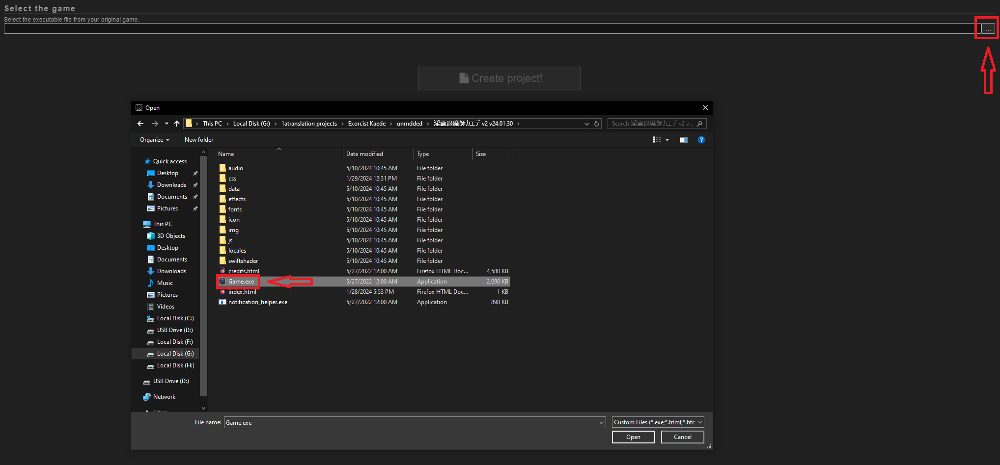
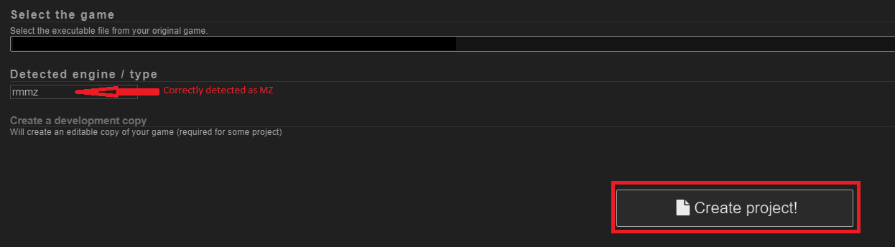
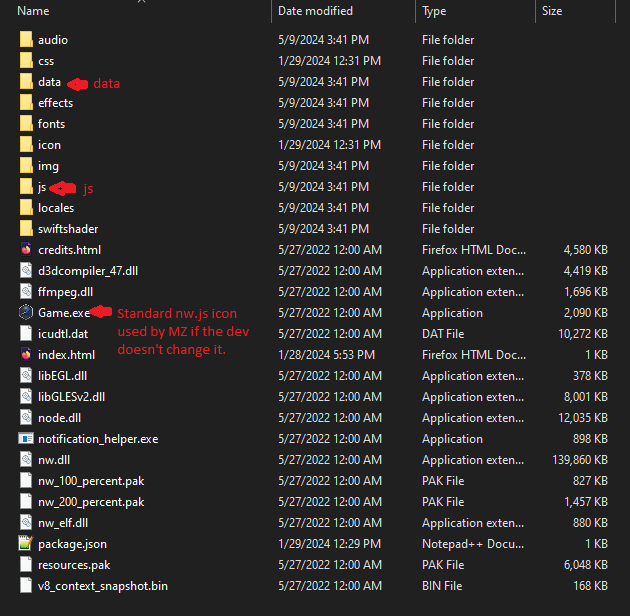
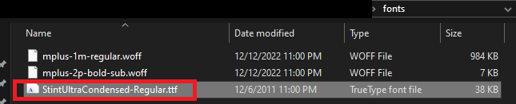
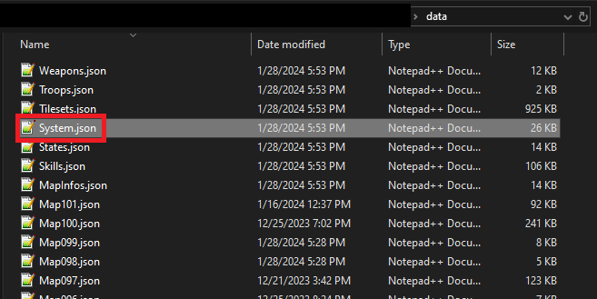
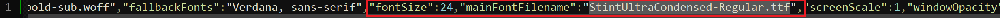
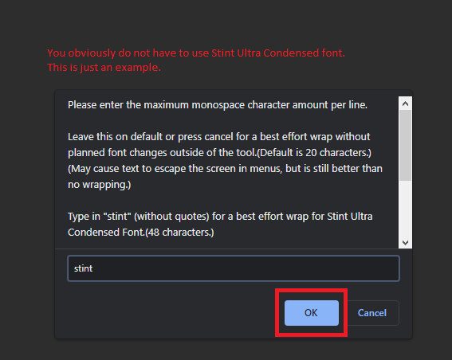

MZ is the successor of MV and uses the same parser: HTML5 technology, all game data in JSON files, scripts and plugins in JavaScript. The differences that matter for translation are the folder layout, the font configuration, and a few MZ-only data structures. Start with Your First Translation Project for the general walkthrough, and read RPG Maker MV alongside this page — everything there applies to MZ as well.
RPG Maker XP, VX, Ace, MV & MZ Parser.Select the game, pick the game's executable or its index.html. The wizard reports rmmz under Detected engine / type — MZ is identified by its js/rmmz_core.js file (see Engine Detection).Create project!. Parsing, plugin collection and staging work exactly as for MV.
Select the RPG Maker parser entry in the wizard.

Pick the MZ game executable; rmmz is detected automatically.
After creation: review any reported errors, then close the summary.
data and js folders next to the executable — there is no www wrapper folder. The parser finds the data either way.data/ are read with the same rules as MV — including maps, database entries, CommonEvents.json and System.json; Animations.json and Tilesets.json are skipped..ogg_, .m4a_ and .png_ extensions instead of MV's .rpgmvo family. The text pipeline does not need them; picture translation can read them — see SEP Picture Translation.
MZ: lowercase data and js folders next to the executable.
MZ does not use gamefont.css. Its main and number fonts are configured in the advanced section of data/System.json:
fonts collection folder — a condensed font (sucr.ttf) ships with the tool.System.json object and set the translations of the mainFontFilename and numberFontFilename rows (both tagged red and font) to the font file name.System.json is written, and the font file is copied into the export's fonts folder automatically when it is found in the collection folder or the game's own fonts folder.
The game's fonts folder with an added font file.

Font settings live in the advanced section of data/System.json.

The font filename entries inside System.json.
The export flow is the same as for MV: Export Project → Export to a folder or Export as a Zip file, then the Export Options dialog with its tagged-rows filter and Word Wrap By Tag rules (export-time rules, distinct from the Automatic Word Wrapping button — see RPG Maker MV: Applying and exporting). Translated files are written into the export target's data and js folders; encrypted MZ data files are re-encrypted when the original game was encrypted.

Word wrap rules: pick the tags to wrap and the maximum line length.
rmmz_core.dat). The parser detects the encryption parameters from the game's own scripts, decrypts the files for translation and re-encrypts them on export — see Encrypted & Packed Games. Files that cannot be decrypted are skipped.plugins.js in the editor before exporting.